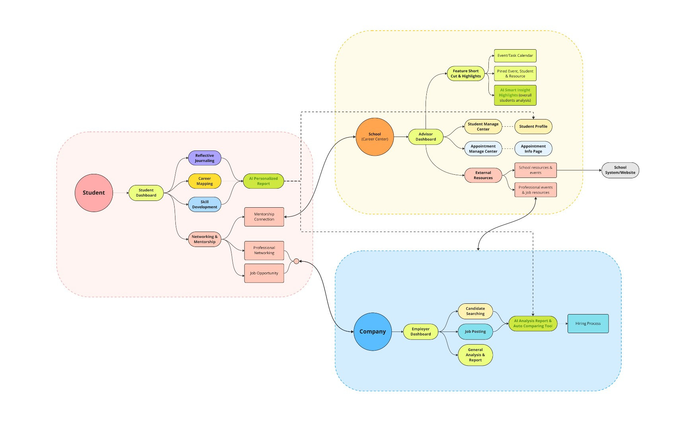
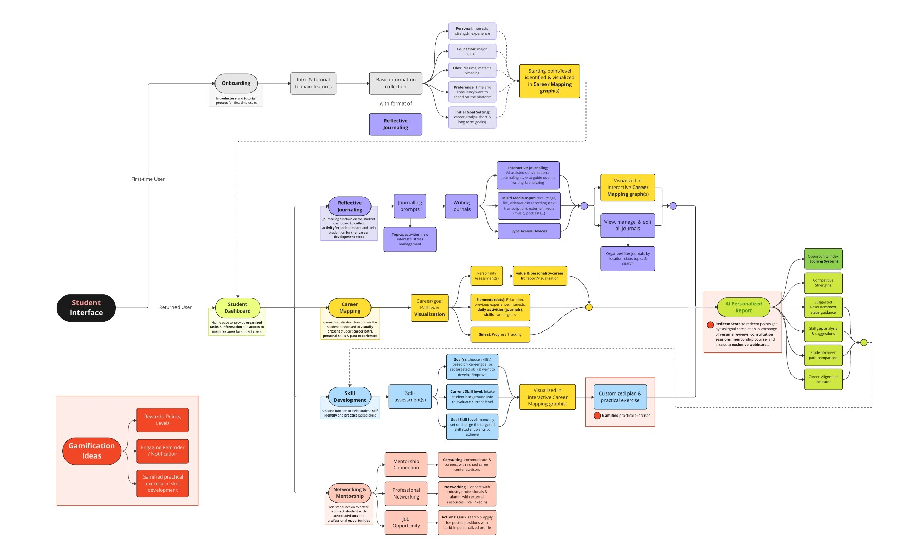
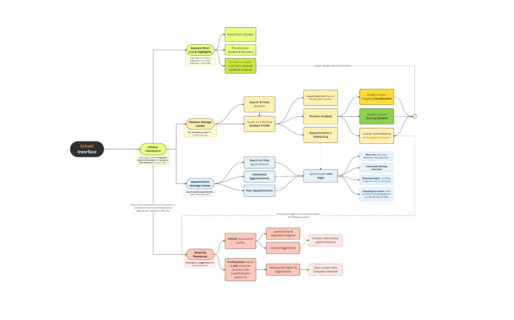
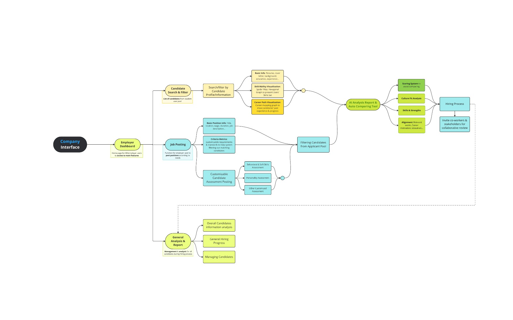

The Ed-Tech Leadership Gap in Higher Education and a Student-Centered Career-Development Alternative
Lo/Be Lab · New Haven, CT
About this working paper Author-produced. Joins a
critical review of ed-tech governance to a design proposition (Curriculus). It does not report empirical study outcomes.
Comments, citation requests, and counter-evidence welcome at
seth.looper@gmail.com.
Lo/Be Lab · CC
BY-NC 4.0
ORCID: 0009-0002-8683-1632
(https://orcid.org/0009-0002-8683-1632)
The Ed-Tech Leadership Gap in Higher Education and a Student-Centered Career-Development Alternative
Lo/Be Lab · New Haven, CT · seth.looper@gmail.com · ORCID 0009-0002-8683-1632
Abstract
Higher-education institutions have become structurally dependent on commercial educational-technology platforms to mediate teaching, advising, retention, and career development. This paper argues that this dependence is governed by leaders, provosts, deans, CIOs, student-affairs and career-services executives, who adopt tools under logics of efficiency, risk-management, and institutional signaling, frequently without the technical, pedagogical, ethical, and evaluative literacy to assess what they procure, and without the faculty and students who hold the relevant knowledge. The result is an adoption-understanding gap: campuses accumulate fragmented, often surveillant systems while the problems they claim to solve, belonging, equity, learning, well-being, and meaningful career formation, persist or worsen, and students bear the cost. Synthesizing critical ed-tech studies, higher-education administration, and design scholarship, the paper establishes the critique with current evidence (market concentration; weak self-reported benefit despite near-universal adoption; documented equity harms in predictive analytics and automated proctoring; the recurring "local success, scaled null" pattern). It then asks a constructive design question: what would career development look like if it began from students' need to reflect, make sense, and become, rather than from institutional throughput? In response it presents Curriculus, a three-stakeholder (student, advisor, employer) concept centering student-generated reflective data ("dots and lines"), longitudinal career-pathway visualization, skill self-assessment, and human mentorship. The paper then evaluates Curriculus reflexively, showing where it answers the critique and where its own AI scoring, analytics, and employer-matching risk reproducing the datafication and bias it opposes, and proposes safeguards. The contribution is a paired diagnosis and design proposition, plus principles for literacy-led, student-centered technology governance.
Keywords higher education leadership · educational technology · technological solutionism · datafication · student-centered design · reflective practice · sensemaking · career development · design proposition · participatory governance · care
Walk onto almost any campus in the United States and you will find it saturated with educational technology. A handful of learning-management platforms mediate nearly every course: the market has been led by the same four vendors for fifteen years, with one provider now reaching roughly half of all enrolled students by itself (Hill, 2025). Layered atop the LMS are retention-analytics dashboards, advising and scheduling systems, proctoring software, customer-relationship platforms for recruitment, career portals, and a fast-arriving generation of AI tutors and assistants. The pandemic, which briefly made digital tools the "required form of learning," left much of that purchasing in place. By almost any measure of adoption, the digital transformation of higher education has already happened.
And yet the problems this technology was meant to solve have not gone away. Students still struggle with belonging, direction, and well-being; equity gaps persist; and the institutions that bought the tools cannot confidently say they worked. The paradox at the center of this paper is therefore the abundance of technology amid unmet need: campuses have never had more tools and rarely seemed less able to meet the developmental needs of the students in front of them.
The conventional explanations for this gap, poor implementation, change resistance, the wrong vendor, locate the problem in execution. This paper locates it earlier, in governance. Ed-tech in higher education is adopted through institutional logics, efficiency, risk management, accountability, and competitive signaling, that have been well described as academic capitalism (Slaughter & Rhoades, 2004) and audit culture (Strathern, 2000; Shore & Wright, 2000). Decisions are made by senior leaders, provosts, deans, CIOs, and student-affairs and career-services executives, who must evaluate tools whose technical operation, pedagogical assumptions, ethical implications, and actual effects they are rarely equipped to assess. The seduction of the dashboard, metrics that make an institution legible to itself, is mistaken for understanding of whether students are being served.
The result is what I will call an adoption-understanding gap: the distance between the rate at which institutions acquire technology and the depth at which their decision-makers comprehend it. This gap is not only a matter of individual literacy, a claim that remains under-evidenced in the scholarship and which this paper treats as a hypothesis to be examined rather than a settled fact. It is also, and more demonstrably, a matter of governance: the people who hold the relevant knowledge, faculty who understand pedagogy, and students who live the experience the tools mediate, are routinely excluded from selection, with platforms mandated to them without consultation (Scott & Clarke Gray, 2023; EDUCAUSE, 2024). The knowledge already exists inside the institution; it is simply kept out of the room where tools are chosen. This is the mechanism by which solutionism enters the university, the recasting of complex developmental problems as neatly computable ones (Morozov, 2013), and by which the datafication of students proceeds under commercial and administrative, rather than pedagogical, direction (Williamson, 2017). When those who authorize a technology cannot interrogate it, the technology's own logic, optimization, ranking, surveillance, rushes in to fill the vacuum. And the costs land on students: in the over-prediction of failure for racially minoritized students by commercial risk models (Feathers, 2021; Gándara et al., 2024); in the trading of reflective, relational development for transactional metrics; and in the quiet work of integration that fragmented systems push back onto the very students they claim to serve.
A critique that stops at diagnosis leaves the field where it found it. The more demanding move is to ask what the alternative would actually look like, and to risk a concrete proposal that can itself be criticized. This paper therefore turns, in its second half, from critique to construction, organized by a single question: what would a career-development system look like if it began from a student's need to reflect, make sense of their experience, and become someone with direction, rather than from the institution's need for throughput and legibility?
In answer, the paper advances Curriculus, a concept for a three-stakeholder career-development ecosystem, students, career-center advisors, and employers, built around reflective journaling and the visualization of a student's own experience over time (Figures 1 to 4). Its conceptual core is a sensemaking model the proposal calls dots and lines: "dots" are significant experiences and insights a student captures through daily reflection; "lines" are the patterns that connect them into what the design names a student's "unique personal language or passion." Curriculus is presented here as a design proposition, a deliberate instantiation of student-centered principles that is then held to account against this paper's own critique. As Section 10 shows, several of Curriculus's institutional and employer-facing features, a standardized scoring system, an employer auto-comparing tool, cohort-level analytics, and a monetization path toward acquisition by an incumbent platform, risk reproducing the very datafication and ranking the critique condemns.
This paper makes three contributions. First, it offers an evidence-based critique of the adoption-understanding gap in higher-education ed-tech governance, organized by a four-part analytic of technical, pedagogical, ethical, and evaluative literacy (Sections 4 to 6). Second, it derives a set of student-centered design principles from that critique and instantiates them in Curriculus, contributing the "dots and lines" sensemaking model as a concrete design primitive (Sections 8 to 9). Third, and most important methodologically, it subjects its own design proposition to reflexive evaluation, showing where the design answers the critique and where it must be constrained to avoid repeating it, and from this derives principles for literacy-led, student-centered technology governance (Sections 10 to 11).
The paper proceeds as follows. Section 2 situates the ed-tech turn within the political economy of higher education. Section 3 describes the dual method, a critical review plus a design proposition. Sections 4 to 6 develop the critique and its cost to students; Section 7 steelmans the case for ed-tech. Section 8 derives design principles; Section 9 presents Curriculus; Section 10 evaluates it reflexively; Sections 11 to 13 turn to governance, a research agenda, and conclusion. Throughout, the aim is to recover the question that procurement forgets: what does a student need in order to become?
The infrastructure of American higher education is now substantially digital, and that infrastructure is concentrated. The market for learning-management systems, the platform through which most teaching is mediated, has been led by the same four vendors for fifteen years. By year-end 2024 a single provider, Canvas, reached roughly half of all enrolled students by itself: more than its next three competitors combined (Hill, 2025). Nor is concentration confined to the LMS. The 2021 merger of Anthology and Blackboard folded a leading learning platform together with student-information, customer-relationship, and enrollment systems into a single company (Anthology, 2021). The student therefore meets the institution increasingly through a small number of commercial platforms that span instruction, recruitment, advising, and assessment. (Industry estimates of the market's overall size and growth rate diverge sharply, a spread that itself illustrates how much "market evidence" depends on who is producing it.)
The COVID-19 pandemic did not invent this dependence, but it deepened and normalized it. Emergency remote instruction made digital tools, for a period, the required form of learning, and much of that adoption stayed in place after campuses reopened. The pandemic thus operated as a ratchet, easy to turn one way, hard to turn back, locking in tools whose value for the students who most need them has not been shown.
To understand why institutions buy what they cannot evaluate, one must look at the logics that govern them. Over several decades, higher education has been reorganized around market behavior and revenue generation, what Slaughter and Rhoades (2004) term an "academic capitalist knowledge regime," and around the expansion of audit and accountability mechanisms from finance into the academy (Power, 1997; Strathern, 2000). Shore and Wright (2000) describe the resulting regime as one of "coercive accountability," in which mandatory metrics increasingly govern decision-making and subordinate professional judgment to quantified legibility. (That metrics fully displace professional judgment is contested; the more defensible claim is that they increasingly crowd it.) Technology procurement is a natural expression of this regime: a dashboard that renders students as tractable numbers is exactly the artifact an audit culture is predisposed to value, whether or not it improves the student's experience.
Four critical traditions frame the analysis. Technological solutionism (Morozov, 2013) names the disposition to recast complex social problems as neatly computable ones to be optimized "if only the right algorithms are in place," with adoption driven by the availability of a tool rather than reasoning about the problem. Datafication and platformization (Williamson, 2017; Selwyn, 2016) describe how educational data, code, and algorithms become entangled with commercial and political interests, shifting power toward vendors and data intermediaries. Learnification (Biesta, 2010) names the reduction of education's purposes to measurable learning outputs, displacing questions of what and for what. Together these lenses explain how a procurement decision can be locally rational and educationally hollow at once.
This paper sits at the meeting point of four research conversations that rarely speak to one another. Critical studies of educational technology have richly theorized the datafication and platformization of education and the solutionist logic that drives adoption (Morozov, 2013; Selwyn, 2016; Williamson, 2017), but this literature is largely diagnostic: it critiques tools and their politics far more often than it designs alternatives. Higher-education governance scholarship explains the institutional conditions that make uncritical adoption rational, academic capitalism (Slaughter & Rhoades, 2004) and audit culture (Strathern, 2000; Shore & Wright, 2000), yet seldom follows those logics down to the procurement decision or the student who lives with its consequences. Research on algorithmic fairness in education documents concrete harms, from biased risk prediction (Gándara et al., 2024) to discriminatory proctoring (Yoder-Himes et al., 2022), but typically locates the problem in the model rather than in the governance arrangement that selected it. And design research and design education, through research-through-design, reflective practice, and the pedagogy of care (Schön, 1983; Fiadeiro et al., 2023), offer exactly the constructive, student-centered orientation the other three lack, but have rarely been turned on the institutional question of how ed-tech is chosen. The gap this paper addresses lies in the space between critique and construction: I have not found work that both (a) traces the governance failure, the exclusion of pedagogical and student knowledge from procurement, to its student-experienced cost, and (b) answers it with a concrete, reflexively-evaluated design proposition. This paper aims to address that gap, joining a critical diagnosis of ed-tech governance to a student-centered career-development design (Curriculus) that is held accountable to its own critique.
This paper joins two modes of inquiry. The first is a critical, integrative review: rather than a systematic review aiming at exhaustive coverage, it synthesizes evidence across critical ed-tech studies, higher-education administration, learning sciences, and design scholarship to construct and stress-test an argument. The second, drawing on the design-research tradition, advances a concrete design proposition, Curriculus, as a method: an unbuilt artifact whose specificity exposes the design principles to critique and makes the argument's commitments testable.
Sources were drawn from peer-reviewed scholarship, reputable sector reports (e.g., EDUCAUSE, the What Works Clearinghouse), and high-quality investigative journalism. Claims were checked against primary sources. The critique is organized by a four-gap analytic, technical, pedagogical, ethical/political, and evaluative literacy (Section 5), which structures both the diagnosis and the governance recommendations. Evidence is reported with its strength and contestation flagged, and claims that did not survive that check were removed rather than softened.
Curriculus began as a proposal for a career-development application, developed by the author from experience in global education consulting and higher-education career advising. The project did not progress beyond the concept-and-proposal stage: it exists as a written proposal and a set of system-architecture diagrams (Figures 1 to 4), not as a deployed or empirically evaluated system. That unbuilt status is the basis of its use here. Drawing on the design-research tradition, in which designing can itself be a mode of inquiry, the paper treats Curriculus as a design proposition rather than a built or evaluated system: an unbuilt concept whose value lies in making the critique's principles concrete, and in serving as a test case for whether a well-intentioned design can avoid reproducing the harms it opposes. It is a concept work: a worked-out idea for re-imagining how higher education supports students in becoming, offered for examination rather than adoption.
The author is both the critic and the designer, a dual role that makes the reflexive evaluation of Section 10 both possible and obligatory. The review is interpretive, not exhaustive; the design claims are arguments, not findings. Two limits are stated plainly and revisited throughout: direct empirical evidence that institutional leaders lack ed-tech literacy is thin, and the design has not been validated with the students and advisors it is meant to serve.
Ed-tech is adopted under a recognizable set of drivers, few of which are pedagogical. Efficiency and scale promise to do more with constrained staff. Risk and liability management favor tools that standardize process and produce defensible records. Competitive and reputational signaling, the appearance of innovation, the optics of keeping pace with peer institutions, rewards visible adoption independent of effect. And accountability pressure rewards systems that generate the metrics accreditation and funding demand. Each driver is institutionally rational; none requires that the tool actually help a student learn or grow.
The more consequential question is who participates in the decision. The evidence indicates that the people best positioned to judge a tool's pedagogical and experiential value are frequently absent from the choice: faculty who understand teaching, and students who live the consequences, are routinely excluded from ed-tech selection, with platforms mandated to them without consultation about their origin or student experience (Scott & Clarke Gray, 2023; EDUCAUSE, 2024). The decision is shaped instead by procurement processes and by a vendor sales ecosystem, conferences, pilots, and account relationships, built to move institutions from trial to contract. The result is a structural mismatch: the knowledge that would make a wise choice exists within the institution but is kept outside the room where the choice is made.
What fills the gap is the dashboard. Metrics legibility, the capacity of a system to render students, advisors, and outcomes as clean, comparable numbers, is easily mistaken for understanding of whether students are being served. The dashboard answers the institution's question (is our process legible and defensible?) while quietly substituting it for the student's question (am I learning, belonging, becoming?). This substitution is the hinge on which the rest of the critique turns.
If decisions are driven by non-pedagogical logics and made without the people who understand pedagogy, the capacity to interrogate a tool is correspondingly thin. That capacity can be analyzed as four distinct literacies.
5.1 Technical literacy. Do decision-makers understand interoperability, data ownership and portability, algorithmic function, and security, what the system actually does with student data, and on whose terms?
5.2 Pedagogical literacy. Is a tool chosen against a theory of learning, or merely against a feature list and a demo? A platform can be technically excellent and pedagogically empty.
5.3 Ethical and political literacy. Are a tool's surveillance, consent, equity, and labor implications examined before adoption, or discovered after harm?
5.4 Evaluative literacy. Are effectiveness claims tested rigorously and independently, or accepted from vendor-supplied "evidence"? This gap is the most acute of the four: even sophisticated buyers struggle to tell marketing from research (Section 6.3).
5.5 A note on the evidence. The review for this paper found little direct, peer-reviewed evidence that named leaders, provosts, deans, CIOs, personally lack these literacies; this is under-measured, and the paper treats individual illiteracy as a hypothesis rather than a finding. What is evidenced is structural: the literacy that exists in the institution is excluded from the decision (Section 4.2). The "knowledge gap," properly understood, is therefore less a deficit in particular individuals than a property of a governance arrangement that keeps relevant knowledge out of the room. This reframing is more defensible and more actionable: it points toward participation as well as training.
The costs of the gap are borne by students in at least five ways.
6.1 Datafication and surveillance. As education is platformed, the student becomes a continuously measured subject (Williamson, 2017). The clearest illustration is automated proctoring. In one peer-reviewed study, a widely used proctoring system's facial detection succeeded for 78% of darker-skinned versus 92% of lighter-skinned students (p < .001) and flagged darker-skinned students several times more often, despite review showing no actual difference in cheating behavior by race (Yoder-Himes et al., 2022). Live proctoring, separately, has been shown to depress performance for high-test-anxiety students in a way masked by aggregate score comparisons (Woldeab & Brothen, 2019). Both should be read as strong documented cases rather than settled population effects, each is a single, modest study, but together they show how a surveillance tool can encode harm precisely where it claims neutrality.
6.2 Transactional substitution. When the institution's questions are metric and the student's are developmental, the tools optimize the former. Reflection, sensemaking, and the slow work of figuring out a direction are displaced by résumé counts, placement rates, and engagement scores, the "learnification" of student development (Biesta, 2010), in which what can be measured crowds out what matters.
6.3 Equity harms and the evidence problem. Predictive student-success analytics, marketed as support, have been shown to over-predict failure for Black and Hispanic students (Feathers, 2021; Gándara et al., 2024; Bird, Castleman & Song, 2024); a score built to help can become a label that sorts. Compounding this is an evaluative hazard: ed-tech benefit claims are frequently inflated. A 2023 meta-analysis of Universal Design for Learning, for instance, pooled thirteen mostly-uncontrolled studies to report an implausible effect size of roughly d = 3.56, about nine times the typical educational effect (Almeqdad et al., 2023), a vivid case of marketing-grade evidence entering the literature. Buyers without evaluative literacy cannot easily tell such a figure from a real one.
6.4 Fragmentation. Students navigate a disconnected array of systems, one for the résumé, another for scheduling, others for advising and jobs, and are left to do the integration the platforms do not. Coherence, a basic condition for sensemaking, is offloaded onto the people least equipped to supply it.
6.5 Deskilling of human support. As automation absorbs advising functions, there is a risk that the relationship mentorship depends on is thinned rather than freed. While the benefits of advising automation are documented, direct empirical evidence that such tools deskill mentorship was not found, and the concern is advanced as a design risk to be guarded against (Section 10), not an established effect.
A critique earns its conclusions only by meeting the strongest version of the opposing case.
The evidence base is mixed. The most authoritative experimental review finds that access to technology alone generally does not raise achievement, but that well-designed computer-assisted learning, especially supplementary mathematics for struggling students, produces real gains, on the order of 0.18 standard deviations on average (Escueta et al., 2020; Bulman & Fairlie, 2016). Low-cost behavioral nudges can work: personalized text-message outreach raised college enrollment by 4 to 7 percentage points at roughly $7 per student, with effects concentrated among students lacking counseling access (Castleman & Page, 2015). AI advising can help, too: a randomized trial of Georgia State University's "Pounce" chatbot increased on-time enrollment by about 3.3 points (Page & Gehlbach, 2017). And for students with disabilities, well-implemented accessibility technology and accommodations are not optional enhancements but conditions of access. Used well, ed-tech demonstrably helps.
The same literature supplies the rebuttal. The benefits are specific, modest, and fragile, and they frequently fail to scale. The summer-melt nudge that worked at $7 per student, applied to roughly 800,000 students in a FAFSA-completion campaign, produced no effect (Bird et al., 2021); and a related conversational-chatbot trial helped unevenly across subgroups rather than universally (Nurshatayeva et al., 2021). The pattern, local success, scaled null, recurs often enough to be a design law, and it cuts directly against the platform logic that promises uniform benefit at scale. Ed-tech helps when it is specific, well-designed, evaluated, and matched to a real need; it underperforms or harms when it is generic, procured for legibility, and assumed to work because it exists.
The argument is therefore not technophobic. It does not claim that technology has no place in education, that data is inherently illegitimate, or that automation cannot serve students. It claims something narrower and harder to dismiss: that the way higher education currently governs ed-tech, through non-pedagogical logics, without the people who hold relevant knowledge, and without the evaluative literacy to separate evidence from marketing, predictably yields tools that fail the students they are bought to serve. The remedy is to change how technology is chosen and designed: the subject of the second half of this paper.
If the preceding critique is correct, that ed-tech in higher education fails not for want of tools but for want of a problem properly framed from the student's position, then the corrective cannot be another tool selected on the same terms. It must begin from a different question. Where institutional procurement asks how do we make our processes more efficient, legible, and defensible?, a student-centered design asks what does a student need in order to reflect, make sense of their experience, and become someone with direction? The following eight principles are derived directly from the failure modes identified in Sections 5 and 6; each is a deliberate inversion of a documented harm.
P1. Begin from student needs and a theory of learning, not institutional throughput. Procurement optimizes for the institution's legibility (dashboards, retention numbers, accreditation reporting); a student-centered system optimizes for the student's development. This reframes "career services" from a placement function into a longitudinal learning process, a shift consistent with Biesta's (2010) caution against the "learnification" of education, in which the purposes of education are collapsed into measurable learning outputs.
P2. Treat student-generated data as the primary substance, owned by the student. The datafication critique (Williamson, 2017) turns on who generates data, for whom, and who holds it. Most platforms harvest behavioral exhaust to serve the institution or vendor. A student-centered design inverts this: the core data is what the student deliberately authors, reflections, experiences, goals, and the student owns, exports, and can delete it.
P3. Put structured reflection before action. Most career tools are action-first (build a résumé, apply, schedule). Reflection-first design treats sensemaking as the prerequisite to action, aligning with the reflective-practitioner tradition (Schön, 1983) and the pedagogy-of-care strand in design education (e.g., Fiadeiro et al., 2023) that the metrics-driven model crowds out.
P4. Use visualization for sensemaking, not ranking. Visualization can either help a person see patterns in their own life or be sorted against others. The former supports agency; the latter reproduces the comparative, surveillant logic of predictive analytics. The design must keep visualization in the service of the student's interpretation.
P5. Position AI as interpretive support, not verdict. The harm in predictive student-success analytics is not computation but authority, models that issue "high-risk" labels with institutional force (Feathers, 2021; Gándara et al., 2024). AI here should surface possibilities a student can accept, revise, or reject, never render a judgment that gatekeeps.
P6. Integrate rather than fragment. Fragmentation offloads integration labor onto students, who must stitch together résumé tools, scheduling, advising, and job boards. Coherence is itself a student-centered value.
P7. Augment human care, do not deskill it. Advising and mentorship are relationships, not transactions. Automation should remove administrative burden from advisors so they can spend more time in human contact, not substitute for the relationship.
P8. Build for participation, consent, and contestability. Students should help shape the system, control what is shared and with whom, and be able to challenge any inference made about them. This is the governance principle (Shore & Wright, 2000) brought down to the level of the individual user.
These principles are the evaluative yardstick for the design that follows, and, in Section 10, the yardstick the design is held against.
Curriculus is a concept for a three-stakeholder career-development ecosystem, students, higher-education career centers, and employers, organized around a single premise: that career direction is discovered through reflection on lived experience, not assembled from credentials. It is presented here as a design proposition that makes the principles of Section 8 legible and, in so doing, exposes them to critique.

Curriculus's conceptual core is a simple model. Dots are significant experiences or insights, a moment of stress, a lesson from a challenge, a habit, a spark of interest. Lines are the patterns that connect them: the recurring logic that constitutes, in the proposal's phrase, a student's "unique personal language or passion." Connecting the dots is the act of mapping and analyzing those relationships to clarify direction. This is a sensemaking model, not a matching model: its unit is the student's own interpretation of their experience over time, a commitment that aligns the design with narrative-identity and career-construction theory, in which people find direction by authoring meaning from experience (McAdams, 2001; Savickas, 2020), and with reflective, design-based approaches to career development (Burnett & Evans, 2016). The ecosystem (Figure 1) routes the products of this reflective work, again, with consent, to advisors who mentor and to employers who hire, so that the student's self-authored narrative, rather than a résumé keyword profile, becomes the basis of connection.

The student's path begins with onboarding that collects a baseline (interests, education, files, preferences, and an initial goal) and renders it as a first point on a career-mapping graph. The dashboard then offers five interlocking functions. Reflective journaling: daily prompts elicit reflection on experience, challenge, and achievement, with explicit attention to stress management and well-being; entries are multi-modal (text, image, audio/video, external media) and AI-assisted in a conversational style. This is the system's primary data source (P2) and its reflection-first commitment (P3). Career mapping and pathway visualization: journal "dots" are composed into an interactive map of education, experiences, daily activities, skills, and goals, with "lines" tracking progress over time. Visualization serves the student's own pattern-finding (P4). Skill development: self-assessment establishes a current and a goal skill level and generates a customized plan and practical exercises (résumé writing, interviewing, networking). Assessment here is formative and self-directed (P1). Networking and mentorship: connects students to advisors, alumni, and professionals, with quick search-and-apply for posted roles. AI Personalized Report: synthesizes the above into opportunity suggestions, competitive strengths, recommended next steps, skill-gap analysis, and a career-alignment indicator. A gamification layer (avatars, points, levels, and a redeem store exchanging earned points for résumé reviews, consultations, mentorship, and webinars) is designed to sustain engagement.

The advisor interface is, per the proposal's own staging, the most immediately viable component, beginning with an AI note-taking tool that transcribes advising sessions, drafts action plans, and schedules follow-ups, explicitly to return advisor time to direct student engagement (P7). The fuller advisor dashboard adds: feature shortcuts (calendar, pinned items, and an "AI Smart Insight" overall-student analysis); a student manage center (search/filter, individual profiles, student analysis, a scoring view, career-mapping visualization, and appointments); an appointment center with AI meeting notes and summaries; and external resources linking school events and professional/job opportunities, bridging to the employer interface.

The employer interface lets companies search and filter candidates by profile, with skill visualization (spider/hexagonal graphs) and career-path visualization replacing résumé keyword scans; post jobs with customizable criteria metrics and behavioral/soft-skill assessments; and run an AI Analysis Report and Auto-Comparing Tool that evaluates candidates on a scoring system, culture-fit, skills/strengths, and alignment before a collaborative, multi-stakeholder hiring review.
Read against Section 8, Curriculus is, in its student-facing core, a faithful instantiation: it begins from the student's reflective need (P1), makes student-authored reflection the primary substance (P2), sequences reflection before action (P3), uses visualization for self-interpretation (P4), and routes administrative load away from advisors to protect the human relationship (P7). The "dots and lines" model is offered as a design contribution: a sensemaking primitive intended to resist the reduction of a person to a credential. Whether the system honors P2, P5, and P8 in its institutional and employer tiers, however, is precisely where the proposition must be tested, and is the subject of Section 10.
A design proposal advanced within a critique earns its credibility only by submitting to that same critique. Curriculus cannot be exempt from the standard it was built to meet. This section therefore reads the design twice: first for what it resolves, then, more importantly, for where its own mechanisms threaten to reproduce the harms documented in Sections 5 and 6.
Against the transactional substitution of metrics for development (Section 6.2), the student interface's reflection-first architecture restores sensemaking as the center of gravity. Against the datafication of behavioral exhaust (Section 6.1), the "dots and lines" model makes the primary data deliberately authored by the student rather than passively extracted. Against fragmentation (Section 6.4), it integrates journaling, mapping, skilling, and advising in one coherent flow. Against the deskilling of advising (Section 6.5), the note-taking tool is explicitly justified as returning time to human mentorship. And against the placement-metric horizon, the longitudinal "becoming" frame treats a career as a developing narrative rather than an event. On the student tier, the design is a coherent answer to the paper's own diagnosis.
The danger lives in the institutional and employer tiers, where Curriculus adopts the very mechanisms the critique condemns.
The Scoring System / Opportunity Index. A "standardized, reliable scoring system providing metrics for employers" is, structurally, the same artifact as the predictive student-success score: a reduction of a person to a comparable number carrying institutional authority. The verified evidence that such scores over-predict failure for Black and Hispanic students (Gándara et al., 2024; Feathers, 2021) is a direct warning. A score built to help a student see their growth and a score built to rank candidates for employers are different instruments wearing the same interface; conflating them imports the harm.
The employer Auto-Comparing Tool and "culture-fit" analysis. Automated candidate ranking reproduces the sorting logic of the systems critiqued; "cultural fit," in particular, is a well-documented vector for homogeneity and bias, and pairing it with "diversity and inclusion metrics" risks turning equity itself into a surveilled, gameable score.
"AI Smart Insight: overall student analysis." Cohort-level analytics on the advisor dashboard is the datafication critique at the institutional scale, useful for resource allocation, but one design decision away from the surveillant "high-risk" flagging the paper opposes.
Predictive analytics in career mapping. The proposal's own language, career maps that "leverage predictive analytics," adopts the epistemics (the future as computable from the past) that Morozov's (2013) solutionism critique targets.
The commercial model. Monetization via institutional subscription, and an explicit exit through acquisition by Workday, LinkedIn, or Handshake, would fold Curriculus into precisely the platform-consolidation and vendor-capture dynamic documented in Section 2. A student-centered design owned by an institutional buyer, or absorbed into an incumbent, faces structural pressure to serve the buyer, not the student.
These tensions are not necessarily fatal, but they are only defused by explicit commitments that should be stated as part of the design, not left implicit:
Each safeguard maps to a specific harm in Section 10.2; together they are the difference between a design that embodies the critique and one that merely re-skins what it critiques.
Curriculus is a concept, not a validated system; the claims here are design arguments, not empirical findings. The reflective and care-centered student tier is the strongest part of the proposition and the part most defensible against the paper's own critique; the scoring and employer-matching tiers are the weakest and most in tension with it. The author is also the designer, a positionality that makes the reflexive reading both possible and necessary. What the proposition most needs next is what the critique demands of all ed-tech: participatory design with students and advisors, and independent study of whether it helps, especially whether it helps equitably, before any claim that it solves what it set out to solve.
If the failure is one of governance rather than software, the remedy must be governance too. Four commitments follow directly from the critique, and each is the inverse of a documented failure mode.
The four literacies of Section 5, technical, pedagogical, ethical/political, and evaluative, are not specialist luxuries but the minimum competence for responsible procurement. Institutions should treat them as such: equipping decision-makers to ask what a system does with student data and on whose terms; to require an explicit theory of learning behind any pedagogical tool; to examine surveillance, consent, and equity before adoption; and, above all, to distinguish independent evidence from vendor marketing. The implausible effect sizes that circulate in the ed-tech literature (Section 6.3) are not hard to spot once one is taught to look; the problem is that buyers are rarely taught.
The strongest, best-evidenced finding of this review is that the people who hold relevant knowledge are kept out of the decision (Section 4.2). The remedy is to put them back in. Procurement should treat faculty, advisors, and students not as end-users to be trained after the fact but as co-decision-makers in selection: present in the room, weighting the criteria, and able to veto tools that fail the test of student experience. Participation is the mechanism by which an institution's existing literacy reaches the choice.
Institutions should refuse to accept vendor-supplied evidence as sufficient, benchmarking claims instead against independent standards such as the What Works Clearinghouse and demanding outcome-based, locally validated evidence of benefit, disaggregated by student group, so that an aggregate gain cannot mask a subgroup harm (the lesson of both the proctoring and the predictive-analytics findings). Contracts should carry sunset clauses and re-evaluation triggers, on the recognition, established in Section 7, that a tool which helps in a pilot may vanish or harm at scale.
Finally, the design half of this paper offers institutions a different shopping list. The lesson of Curriculus is to select and build tools that honor the principles of Section 8: student-owned data, reflection before action, visualization for sensemaking rather than ranking, AI as interpretive support rather than verdict, integration over fragmentation, and the augmentation rather than replacement of human care. A tool should be evaluated less by its feature list than by whose question it answers: the institution's, or the student's.
This paper opens more questions than it closes, and names them deliberately. First, the literacy gap itself is under-measured. The claim that institutional leaders lack the competence to evaluate ed-tech is plausible and consequential but, as the review for this paper found, thinly evidenced; the field needs validated instruments and direct study of how provosts, deans, CIOs, and student-affairs leaders actually reason about technology decisions. Second, independent effectiveness and equity research remains scarce relative to vendor claims. The most valuable contributions would be pre-registered, outcome-based, subgroup-disaggregated studies, and full reporting of null and mixed results, which the "local success, scaled null" pattern (Section 7) suggests are common and under-published. Third, Curriculus itself requires participatory and empirical validation. Its reflective student tier is a hypothesis about what helps students make sense of their experience; its scoring and employer-matching tiers are hypotheses about harms to be contained. Both need to be tested with students and advisors, through participatory design and independent study, before any claim that the design works, let alone that it works equitably. Fourth, the field needs better accounts of technology at scale. If interventions that help locally so often fail or harm when platformed, then scale is not a neutral multiplier but a distinct object of study, with its own ethics and its own design requirements.
Higher education's problem with educational technology is, at root, a problem of who decides, on what knowledge, and toward whose ends. Institutions have bought abundantly and understood sparingly; they have optimized for their own legibility and called it student success; and they have kept the people who know what students need, faculty, advisors, and students themselves, outside the room where the tools that shape student lives are chosen. The cost of that arrangement is borne, quietly and unevenly, by students.
This paper has argued that the corrective is twofold. It is governance: building the literacy the decision requires, making procurement participatory, and holding evidence to an independent standard. And it is design: beginning not from institutional throughput but from a student's need to reflect, make sense, and become. Curriculus was offered as a concrete attempt at the second, and as a demonstration that good intentions are not enough. A design that centers reflection can still smuggle in the scoring, ranking, and surveillance it set out to escape; only explicit principles, real constraints, and a willingness to evaluate oneself against one's own critique keep it from doing so.
The question that procurement forgets is the one with which this paper ends. Before an institution buys or builds anything, it might ask, of the students it serves: will this help you become who you are trying to be? A higher education that learned to ask that question first, and to ask it together with its students, would likely need fewer tools.
Almeqdad, Q. I., Alodat, A. M., Alquraan, M. F., Mohaidat, M. A., & Al-Makhzoomy, A. K. (2023). The effectiveness of universal design for learning: A systematic review of the literature and meta-analysis. Cogent Education, 10(1), 2218191. https://doi.org/10.1080/2331186X.2023.2218191
Anthology. (2021, October 25). Anthology completes merger with Blackboard, launches next chapter in edtech [Press release]. PR Newswire.
Biesta, G. J. J. (2010). Good education in an age of measurement: Ethics, politics, democracy. Paradigm Publishers.
Bird, K. A., Castleman, B. L., Denning, J. T., Goodman, J., Lamberton, C., & Rosinger, K. O. (2021). Nudging at scale: Experimental evidence from FAFSA completion campaigns. Journal of Economic Behavior & Organization, 183, 105-128. https://doi.org/10.1016/j.jebo.2020.12.022
Bird, K. A., Castleman, B. L., & Song, Y. (2024). Are algorithms biased in education? Exploring racial bias in predicting community college student success. Journal of Policy Analysis and Management, 44(2), 379-402. https://doi.org/10.1002/pam.22569
Bulman, G., & Fairlie, R. W. (2016). Technology and education: Computers, software, and the internet (NBER Working Paper No. 22237). National Bureau of Economic Research. https://doi.org/10.3386/w22237
Burnett, B., & Evans, D. (2016). Designing your life: How to build a well-lived, joyful life. Alfred A. Knopf.
Castleman, B. L., & Page, L. C. (2015). Summer nudging: Can personalized text messages and peer mentor outreach increase college going among low-income high school graduates? Journal of Economic Behavior & Organization, 115, 144-160. https://doi.org/10.1016/j.jebo.2014.12.008
EDUCAUSE. (2024). QuickPoll results: Positioning higher education IT governance as a strategic function. EDUCAUSE Review.
Escueta, M., Nickow, A. J., Oreopoulos, P., & Quan, V. (2020). Upgrading education with technology: Insights from experimental research. Journal of Economic Literature, 58(4), 897-996. https://doi.org/10.1257/jel.20191507
Feathers, T. (2021, March 2). Major universities are using race as a "high impact predictor" of student success. The Markup.
Fiadeiro, R., Jackson, K., Saito, C., & Surowiec, L. (2023). Revealing student-led pedagogies of care. In D. Jones, N. Börekçi, V. Clemente, J. Corazzo, N. Lotz, L. M. Nielsen, & L.-A. Noel (Eds.), The 7th International Conference for Design Education Researchers (Learn X Design 2023). Design Research Society. https://doi.org/10.21606/drslxd.2024.058
Gándara, D., Anahideh, H., Ison, M. P., & Picchiarini, L. (2024). Inside the black box: Detecting and mitigating algorithmic bias across racialized groups in college student-success prediction. AERA Open, 10. https://doi.org/10.1177/23328584241258741
Hill, P. (2025, February 6). State of higher ed LMS market for US and Canada: Year-end 2024 edition. On EdTech Newsletter. https://onedtech.philhillaa.com/p/state-of-higher-ed-lms-market-for-us-and-canada-year-end-2024-edition
McAdams, D. P. (2001). The psychology of life stories. Review of General Psychology, 5(2), 100-122. https://doi.org/10.1037/1089-2680.5.2.100
Morozov, E. (2013). To save everything, click here: The folly of technological solutionism. PublicAffairs.
Nurshatayeva, A., Page, L. C., White, C. C., & Gehlbach, H. (2021). Are artificially intelligent conversational chatbots uniformly effective in reducing summer melt? Evidence from a randomized controlled trial. Research in Higher Education, 62(3), 392-402. https://doi.org/10.1007/s11162-021-09633-z
Page, L. C., & Gehlbach, H. (2017). How an artificially intelligent virtual assistant helps students navigate the road to college. AERA Open, 3(4). https://doi.org/10.1177/2332858417749220
Power, M. (1997). The audit society: Rituals of verification. Oxford University Press.
Savickas, M. L. (2020). Career construction theory and counseling model. In S. D. Brown & R. W. Lent (Eds.), Career development and counseling: Putting theory and research to work (3rd ed., pp. 165-199). Wiley. https://doi.org/10.1002/9781394258994.ch6
Schön, D. A. (1983). The reflective practitioner: How professionals think in action. Basic Books.
Scott, A.-M., & Clarke Gray, B. (2023). Who cares about procurement? In L. Czerniewicz & C. Cronin (Eds.), Higher education for good: Teaching and learning futures (pp. 603-622). Open Book Publishers. https://doi.org/10.11647/obp.0363.27
Selwyn, N. (2016). Is technology good for education? Polity Press.
Shore, C., & Wright, S. (2000). Coercive accountability: The rise of audit culture in higher education. In M. Strathern (Ed.), Audit cultures: Anthropological studies in accountability, ethics and the academy (pp. 57-89). Routledge.
Slaughter, S., & Rhoades, G. (2004). Academic capitalism and the new economy: Markets, state, and higher education. Johns Hopkins University Press.
Strathern, M. (Ed.). (2000). Audit cultures: Anthropological studies in accountability, ethics and the academy. Routledge.
What Works Clearinghouse. (n.d.). What Works Clearinghouse. Institute of Education Sciences, U.S. Department of Education. https://ies.ed.gov/ncee/wwc/
Williamson, B. (2017). Big data in education: The digital future of learning, policy and practice. SAGE.
Woldeab, D., & Brothen, T. (2019). 21st-century assessment: Online proctoring, test anxiety, and student performance. International Journal of E-Learning & Distance Education, 34(1), 1-10. ERIC No. EJ1227595.
Yoder-Himes, D. R., Asif, A., Kinney, K., Brandt, T. J., Cecil, R. E., Himes, P. R., Cashon, C., Hopp, R. M. P., & Ross, E. (2022). Racial, skin tone, and sex disparities in automated proctoring software. Frontiers in Education, 7, 881449. https://doi.org/10.3389/feduc.2022.881449
Suggested citation: Looper, S. (2026i). From buying solutions to designing becoming: The ed-tech leadership gap in higher education and a student-centered career-development alternative. Lo/Be Lab Working Reports, 2026-09. https://sethlooper.github.io/lo-be-lab/publications/pdf/20260531_Looper_BuyingSolutions_LoBeLab.pdf